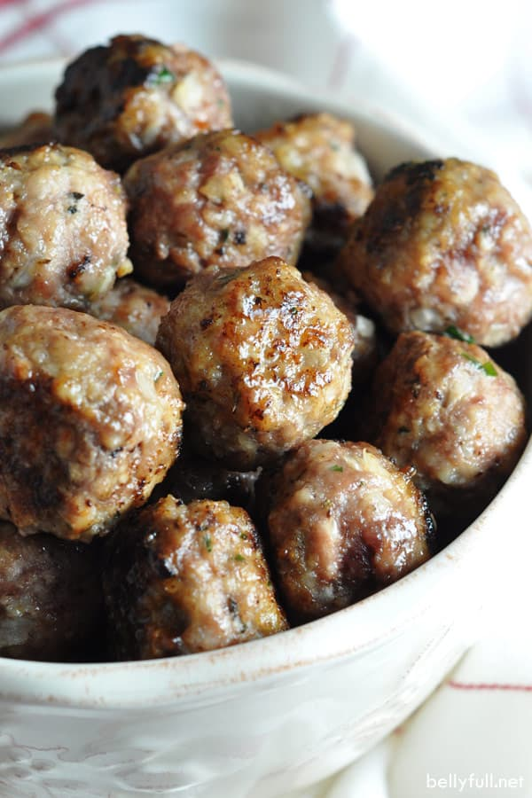

Steak

Description
Much like many spherical burgers
Ingredients
ground beef
salt n' peppa
grit (as in determination, not silt)
Steps
make the beef into balls
Salt balls n peppa them
Give it the ol' sizzle-sazzle
Increase the heat.
Swerve